Hier sind die 120 neuesten von 1.620 Materialien. Alle im Material-Finder ansehen

Materialpaket Advent für die 5. Klasse: 3 Lesespurgeschichten mit Rätselaufgaben (Weihnachtsstern, Plätzchen backen, Handnähen)

Der Hund – unser treues Haustier – Lesespurgeschichte mit Rätselaufgaben (Klasse 5)

Der Weihnachtsstern – eine Pflanze aus Mexiko – Lesespurgeschichte mit Rätselaufgaben (Klasse 5)

Kaninchen und Meerschweinchen artgerecht halten – Lesespurgeschichte mit Rätselaufgaben (Klasse 5)

Das Vogelfutterhaus – Lesespurgeschichte mit Rätselaufgaben (Klasse 5)

Das Naturkundemuseum – Lesespurgeschichte mit Rätselaufgaben (Klasse 5)

Die Kastanie – Lesespurgeschichte mit Rätselaufgaben (Klasse 5)

Das Schaf – Lesespurgeschichte mit Rätselaufgaben (Klasse 5)
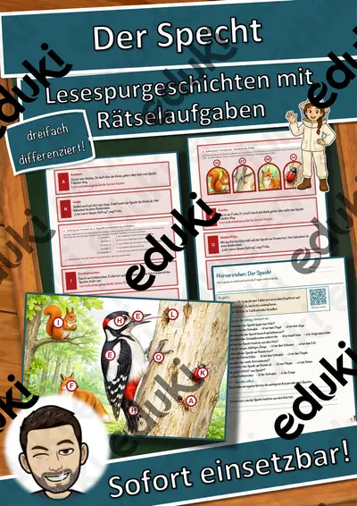
Der Specht – Lesespurgeschichte mit Rätselaufgaben (Klasse 5)
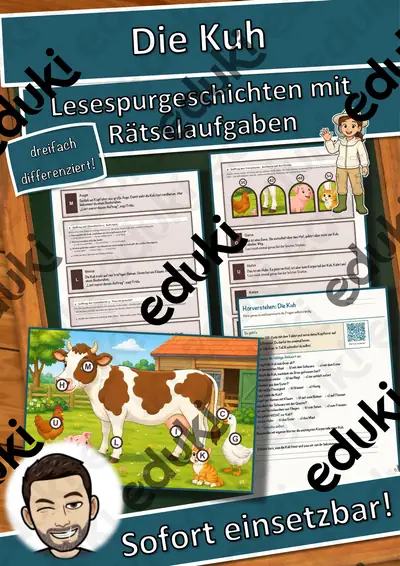
Die Kuh – Lesespurgeschichte mit Rätselaufgaben (Klasse 5)
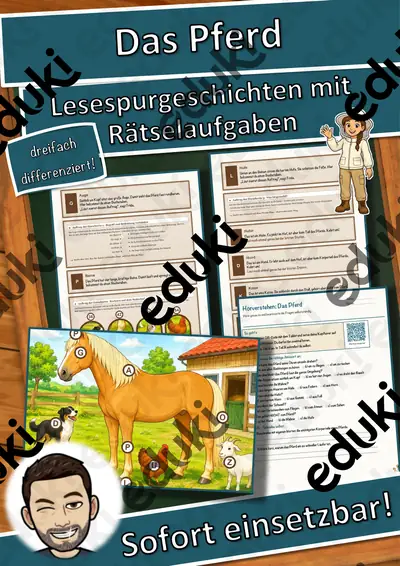
Das Pferd – Lesespurgeschichte mit Rätselaufgaben (Klasse 5)
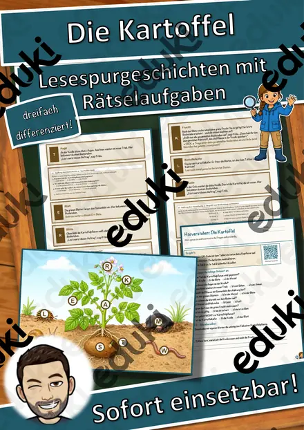
Die Kartoffel – Lesespurgeschichte mit Rätselaufgaben (Klasse 5)
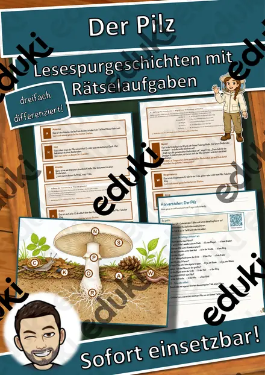
Der Pilz – Lesespurgeschichte mit Rätselaufgaben (Klasse 5)
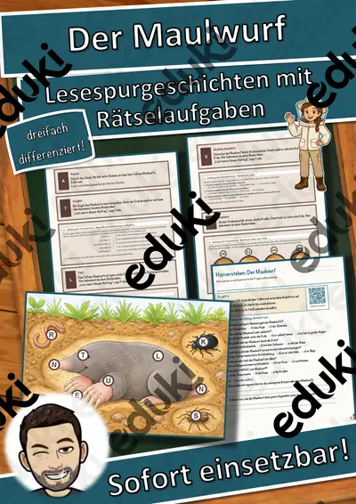
Der Maulwurf – Lesespurgeschichte mit Rätselaufgaben (Klasse 5)
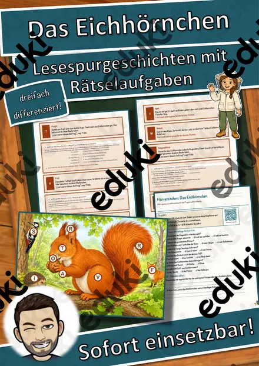
Das Eichhörnchen – Lesespurgeschichte mit Rätselaufgaben (Klasse 5)
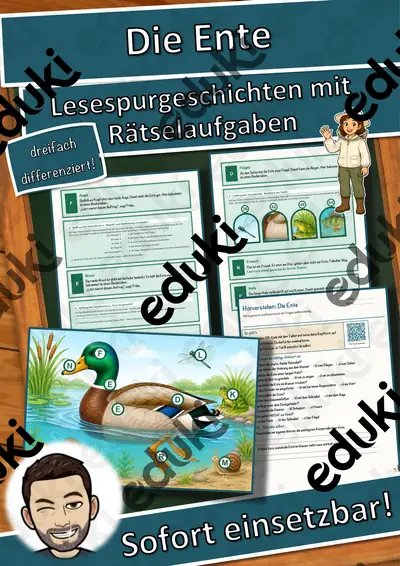
Die Ente – Lesespurgeschichte mit Rätselaufgaben (Klasse 5)
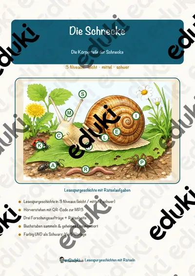
Die Schnecke – Lesespurgeschichte mit Rätselaufgaben (Klasse 5)
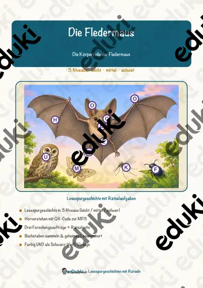
Die Fledermaus – Lesespurgeschichte mit Rätselaufgaben (Klasse 5)
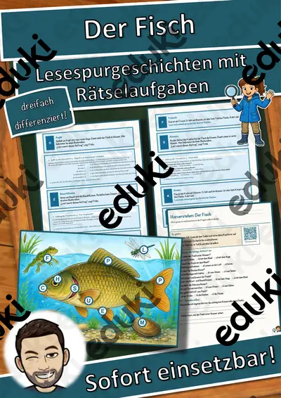
Der Fisch – Lesespurgeschichte mit Rätselaufgaben (Klasse 5)
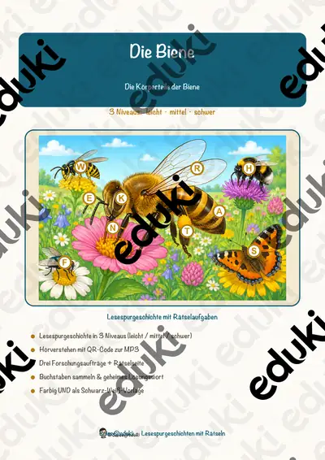
Die Biene – Lesespurgeschichte mit Rätselaufgaben (Klasse 5)
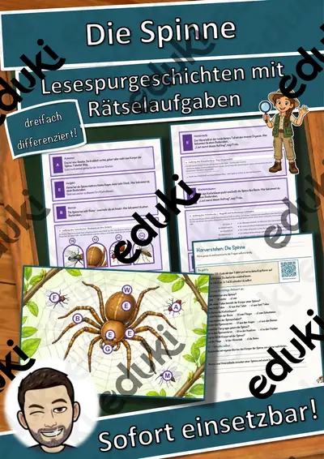
Die Spinne – Lesespurgeschichte mit Rätselaufgaben (Klasse 5)
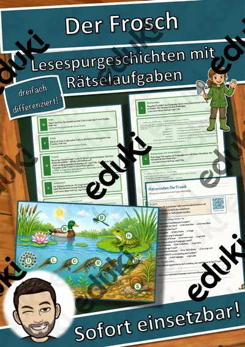
Der Frosch – Lesespurgeschichte mit Rätselaufgaben (Klasse 5)
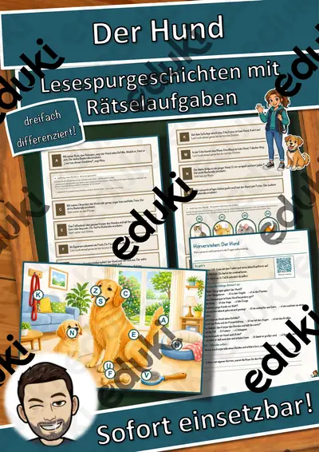
Der Hund – ein treues Haustier – Lesespurgeschichte mit Rätselaufgaben (Klasse 5)
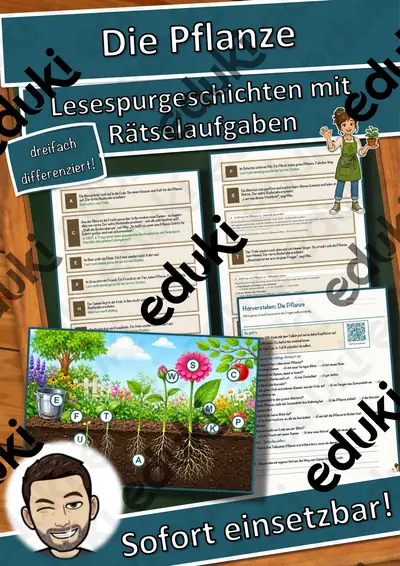
Die Pflanze – Vom Samen zur Frucht – Lesespurgeschichte mit Rätselaufgaben (Klasse 5)
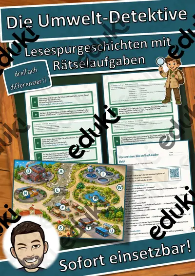
Die Umwelt-Detektive – Lesespurgeschichte mit Rätselaufgaben (Klasse 5)
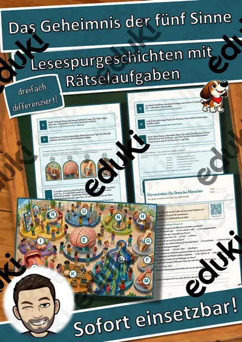
Das Geheimnis der fünf Sinne – Lesespurgeschichte mit Rätselaufgaben (Klasse 5)
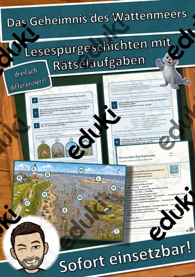
Das Geheimnis des Wattenmeers – Lesespurgeschichte mit Rätselaufgaben (Klasse 5)
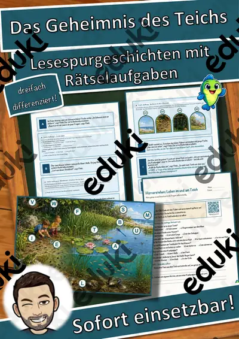
Das Geheimnis des Teichs – Lesespurgeschichte mit Rätselaufgaben (Klasse 5)

Das Geheimnis des Waldes (Lebensraum Wald) – Lesespurgeschichte mit Rätselaufgaben (Klasse 5)

Waschbrett Lückentext mit Wortspeicher Hörverstehen und Suchsel

Röhrenglocken Lückentext mit Wortspeicher Hörverstehen und Suchsel

Kazoo Lückentext mit Wortspeicher Hörverstehen und Suchsel

Guiro Lückentext mit Wortspeicher Hörverstehen und Suchsel

Gong Lückentext mit Wortspeicher Hörverstehen und Suchsel

Drumcomputer Lückentext mit Wortspeicher Hörverstehen und Suchsel

Claves Lückentext mit Wortspeicher Hörverstehen und Suchsel

Zither Lückentext mit Wortspeicher Hörverstehen und Suchsel
Waldhorn Lückentext mit Wortspeicher Hörverstehen und Suchsel
Vuvuzela Lückentext mit Wortspeicher Hörverstehen und Suchsel
Vibraphon Lückentext mit Wortspeicher Hörverstehen und Suchsel
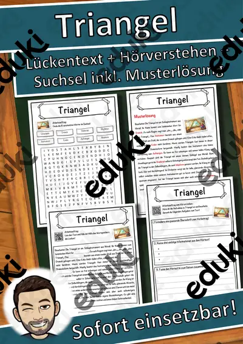
Triangel Lückentext mit Wortspeicher Hörverstehen und Suchsel
Theremin Lückentext mit Wortspeicher Hörverstehen und Suchsel
Tamtam Lückentext mit Wortspeicher Hörverstehen und Suchsel
Tamburin Lückentext mit Wortspeicher Hörverstehen und Suchsel
Tabla Lückentext mit Wortspeicher Hörverstehen und Suchsel
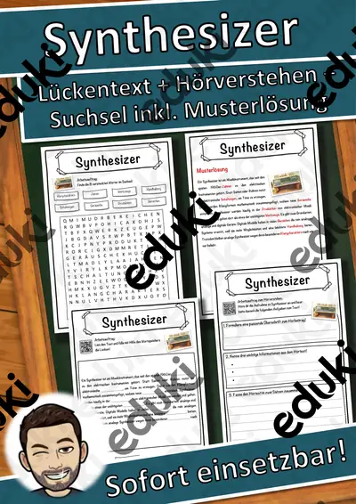
Synthesizer Lückentext mit Wortspeicher Hörverstehen und Suchsel
Steeldrum Lückentext mit Wortspeicher Hörverstehen und Suchsel
Sousaphon Lückentext mit Wortspeicher Hörverstehen und Suchsel
Sitar Lückentext mit Wortspeicher Hörverstehen und Suchsel
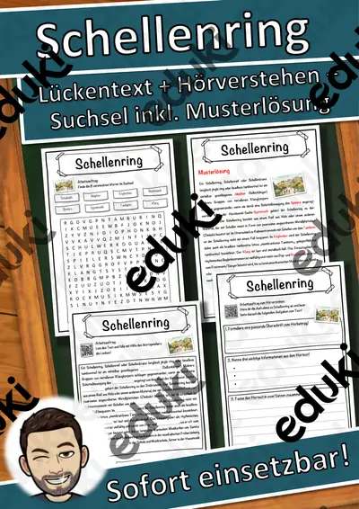
Schellenring Lückentext mit Wortspeicher Hörverstehen und Suchsel
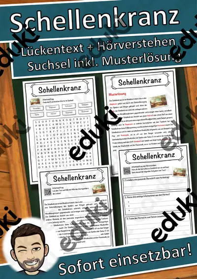
Schellenkranz Lückentext mit Wortspeicher Hörverstehen und Suchsel
Schalmei Lückentext mit Wortspeicher Hörverstehen und Suchsel
Sackpfeife Lückentext mit Wortspeicher Hörverstehen und Suchsel
Röhrentrommel Lückentext mit Wortspeicher Hörverstehen und Suchsel
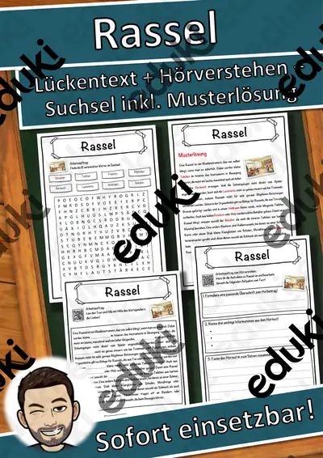
Rassel Lückentext mit Wortspeicher Hörverstehen und Suchsel
Rahmentrommel Lückentext mit Wortspeicher Hörverstehen und Suchsel
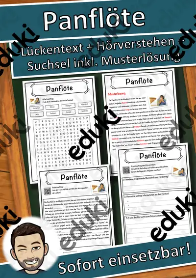
Panflöte Lückentext mit Wortspeicher Hörverstehen und Suchsel
Oud Lückentext mit Wortspeicher Hörverstehen und Suchsel
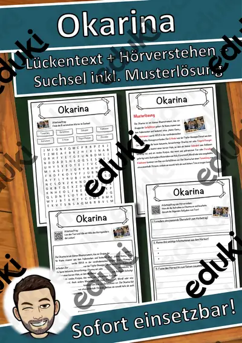
Okarina Lückentext mit Wortspeicher Hörverstehen und Suchsel
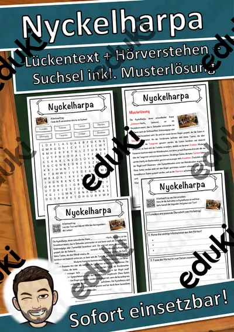
Nyckelharpa Lückentext mit Wortspeicher Hörverstehen und Suchsel
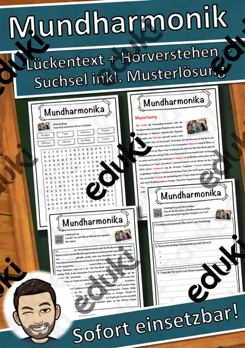
Mundharmonika Lückentext mit Wortspeicher Hörverstehen und Suchsel
Melodica Lückentext mit Wortspeicher Hörverstehen und Suchsel
Maultrommel Lückentext mit Wortspeicher Hörverstehen und Suchsel
Marimba Lückentext mit Wortspeicher Hörverstehen und Suchsel
Maracas Lückentext mit Wortspeicher Hörverstehen und Suchsel
Mandoline Lückentext mit Wortspeicher Hörverstehen und Suchsel
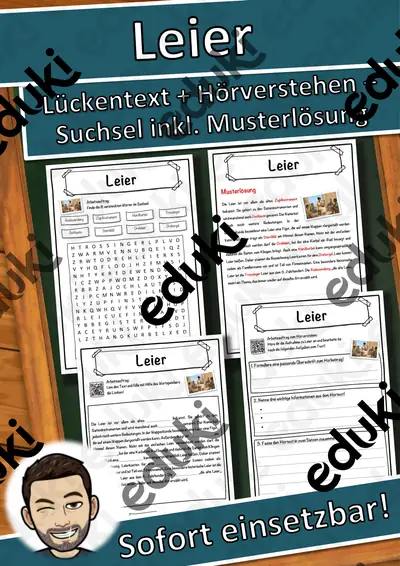
Leier Lückentext mit Wortspeicher Hörverstehen und Suchsel
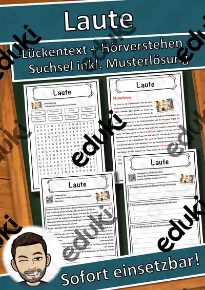
Laute Lückentext mit Wortspeicher Hörverstehen und Suchsel
Kuhglocke Lückentext mit Wortspeicher Hörverstehen und Suchsel
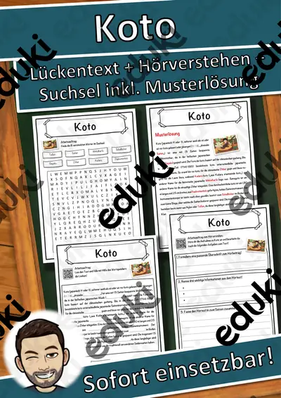
Koto Lückentext mit Wortspeicher Hörverstehen und Suchsel
Kornett Lückentext mit Wortspeicher Hörverstehen und Suchsel
Konzertina Lückentext mit Wortspeicher Hörverstehen und Suchsel
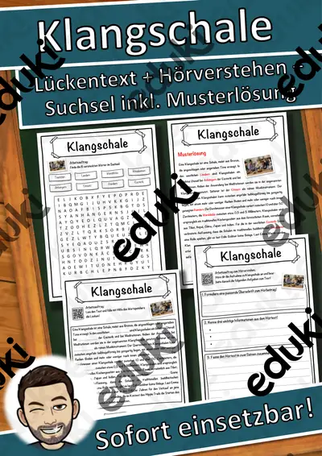
Klangschale Lückentext mit Wortspeicher Hörverstehen und Suchsel
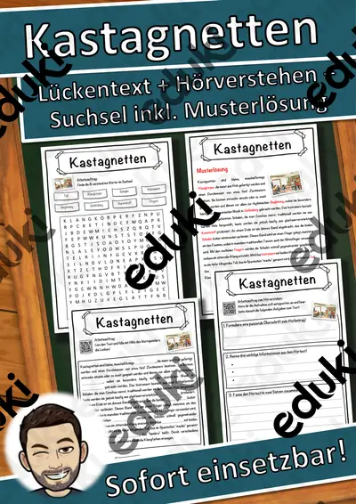
Kastagnetten Lückentext mit Wortspeicher Hörverstehen und Suchsel
Kalimba Lückentext mit Wortspeicher Hörverstehen und Suchsel
Harmonium Lückentext mit Wortspeicher Hörverstehen und Suchsel
Handpan Lückentext mit Wortspeicher Hörverstehen und Suchsel
Hackbrett Lückentext mit Wortspeicher Hörverstehen und Suchsel
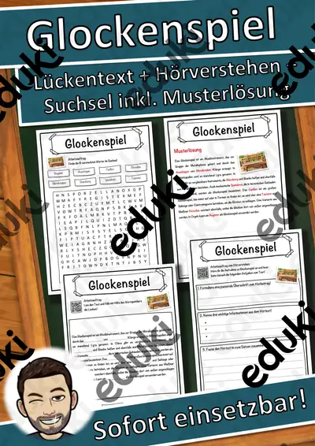
Glockenspiel Lückentext mit Wortspeicher Hörverstehen und Suchsel
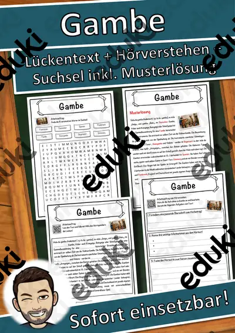
Gambe Lückentext mit Wortspeicher Hörverstehen und Suchsel
Flügelhorn Lückentext mit Wortspeicher Hörverstehen und Suchsel
Euphonium Lückentext mit Wortspeicher Hörverstehen und Suchsel
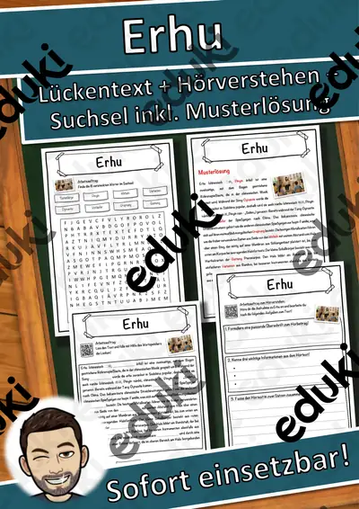
Erhu Lückentext mit Wortspeicher Hörverstehen und Suchsel
E-Gitarre Lückentext mit Wortspeicher Hörverstehen und Suchsel
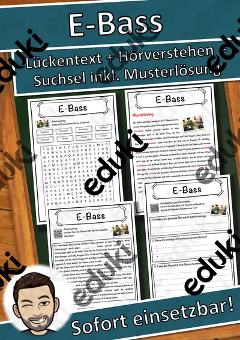
E-Bass Lückentext mit Wortspeicher Hörverstehen und Suchsel
Drehleier Lückentext mit Wortspeicher Hörverstehen und Suchsel
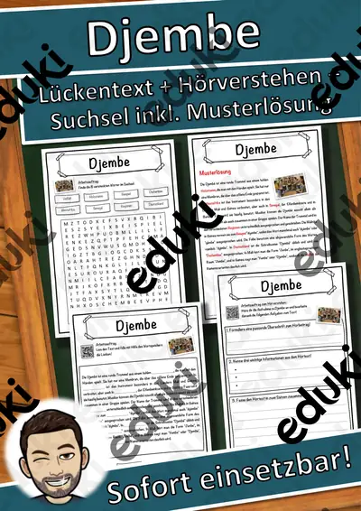
Djembe Lückentext mit Wortspeicher Hörverstehen und Suchsel
Didgeridoo Lückentext mit Wortspeicher Hörverstehen und Suchsel
Darbuka Lückentext mit Wortspeicher Hörverstehen und Suchsel
Conga Lückentext mit Wortspeicher Hörverstehen und Suchsel
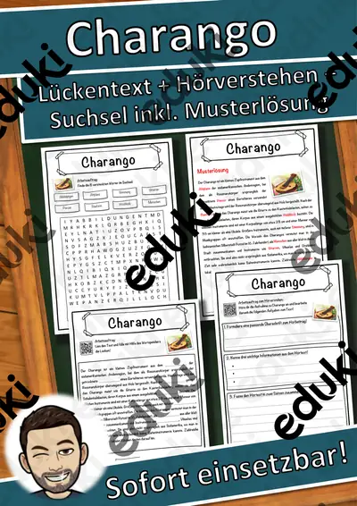
Charango Lückentext mit Wortspeicher Hörverstehen und Suchsel
Cembalo Lückentext mit Wortspeicher Hörverstehen und Suchsel
Celesta Lückentext mit Wortspeicher Hörverstehen und Suchsel
Cajon Lückentext mit Wortspeicher Hörverstehen und Suchsel
Bouzouki Lückentext mit Wortspeicher Hörverstehen und Suchsel
Bongo Lückentext mit Wortspeicher Hörverstehen und Suchsel
Becken Lückentext mit Wortspeicher Hörverstehen und Suchsel
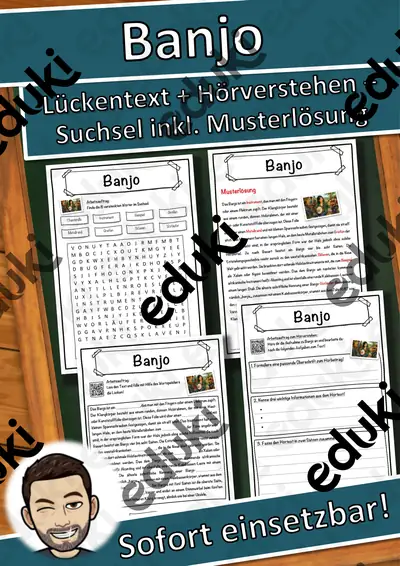
Banjo Lückentext mit Wortspeicher Hörverstehen und Suchsel
Bandoneon Lückentext mit Wortspeicher Hörverstehen und Suchsel
Balalaika Lückentext mit Wortspeicher Hörverstehen und Suchsel
Alphorn Lückentext mit Wortspeicher Hörverstehen und Suchsel
Ukulele Lückentext mit Wortspeicher Hörverstehen und Suchsel
Cadmium Lückentext mit Wortspeicher Hörverstehen und Suchsel
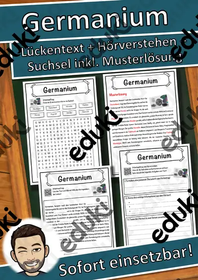
Germanium Lückentext mit Wortspeicher Hörverstehen und Suchsel
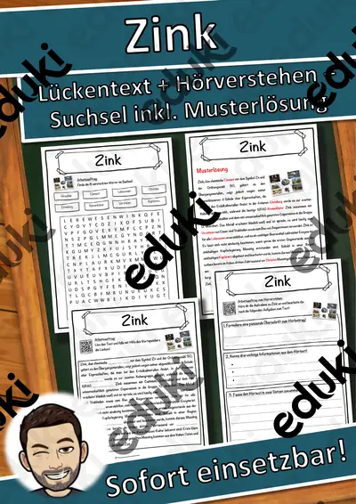
Zink Lückentext mit Wortspeicher Hörverstehen und Suchsel
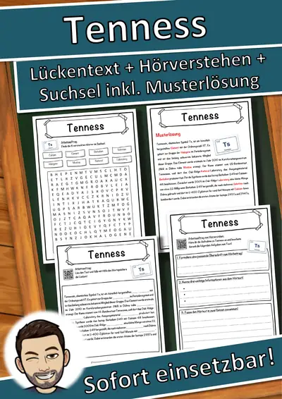
Tenness Lückentext mit Wortspeicher Hörverstehen und Suchsel
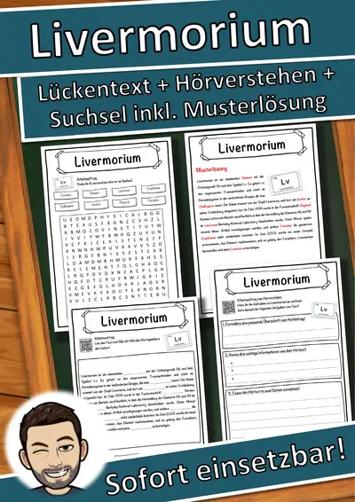
Livermorium Lückentext mit Wortspeicher Hörverstehen und Suchsel
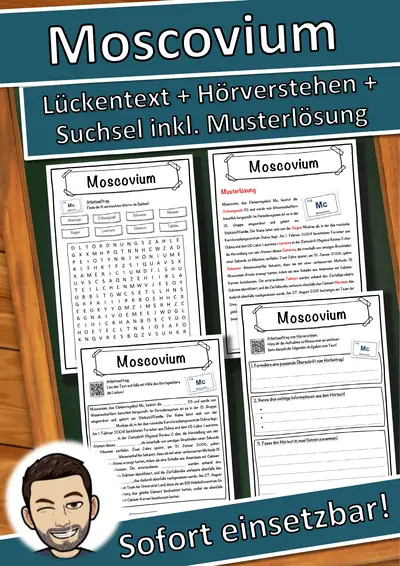
Moscovium Lückentext mit Wortspeicher Hörverstehen und Suchsel
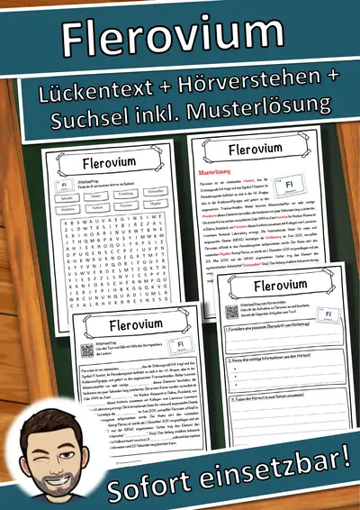
Flerovium Lückentext mit Wortspeicher Hörverstehen und Suchsel
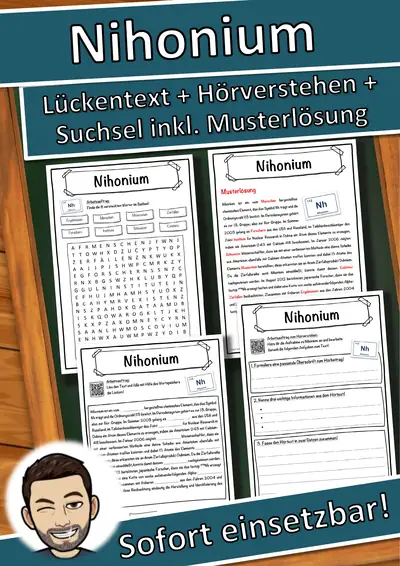
Nihonium Lückentext mit Wortspeicher Hörverstehen und Suchsel
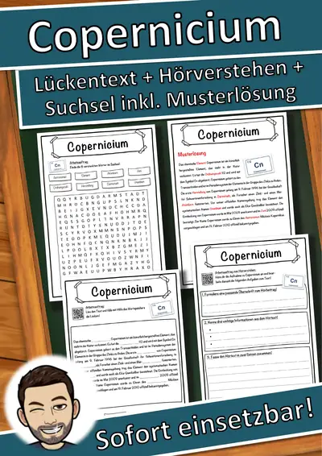
Copernicium Lückentext mit Wortspeicher Hörverstehen und Suchsel
Roentgenium Lückentext mit Wortspeicher Hörverstehen und Suchsel
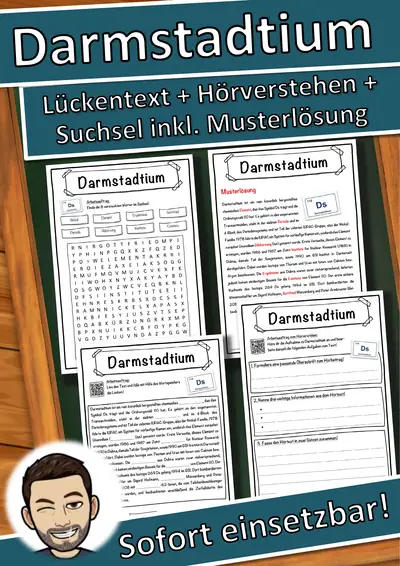
Darmstadtium Lückentext mit Wortspeicher Hörverstehen und Suchsel
Meitnerium Lückentext mit Wortspeicher Hörverstehen und Suchsel
Hassium Lückentext mit Wortspeicher Hörverstehen und Suchsel
Bohrium Lückentext mit Wortspeicher Hörverstehen und Suchsel
Seaborgium Lückentext mit Wortspeicher Hörverstehen und Suchsel
Dubnium Lückentext mit Wortspeicher Hörverstehen und Suchsel
Rutherfordium Lückentext mit Wortspeicher Hörverstehen und Suchsel
Fermium Lückentext mit Wortspeicher Hörverstehen und Suchsel
Keine Materialien gefunden – versuch einen anderen Suchbegriff oder Filter.